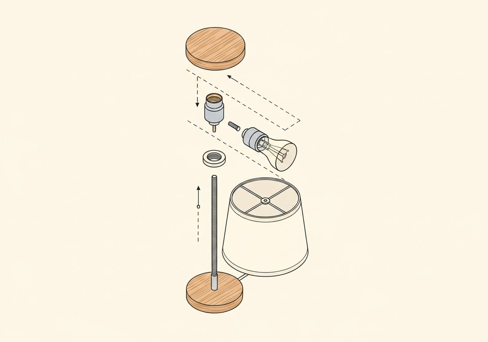
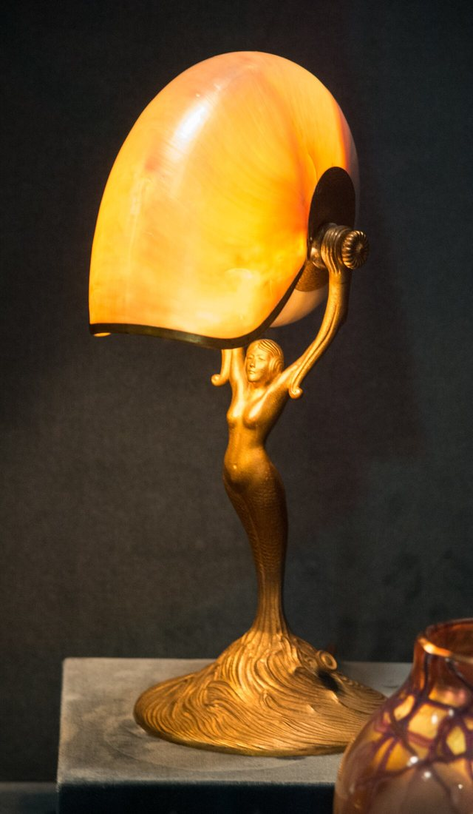
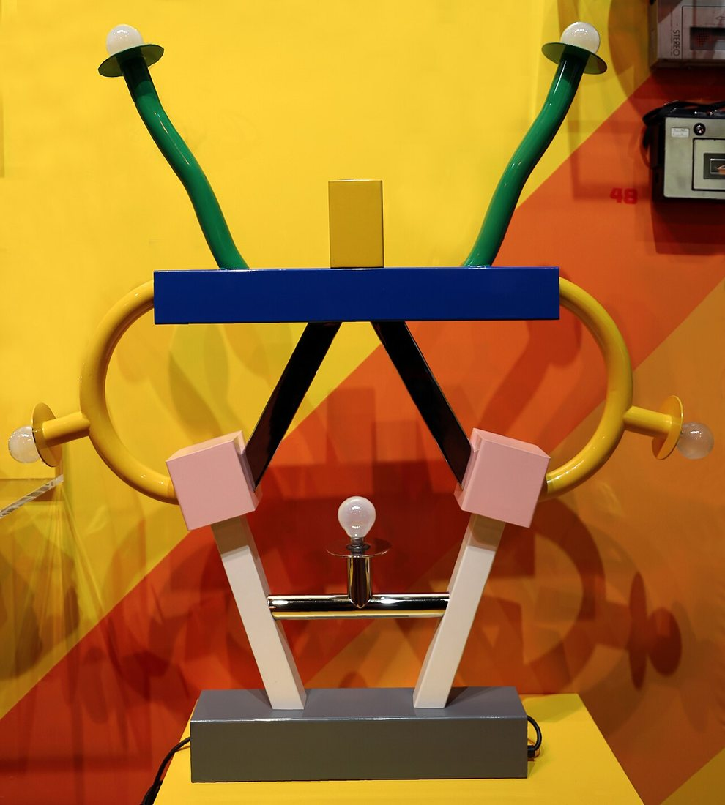
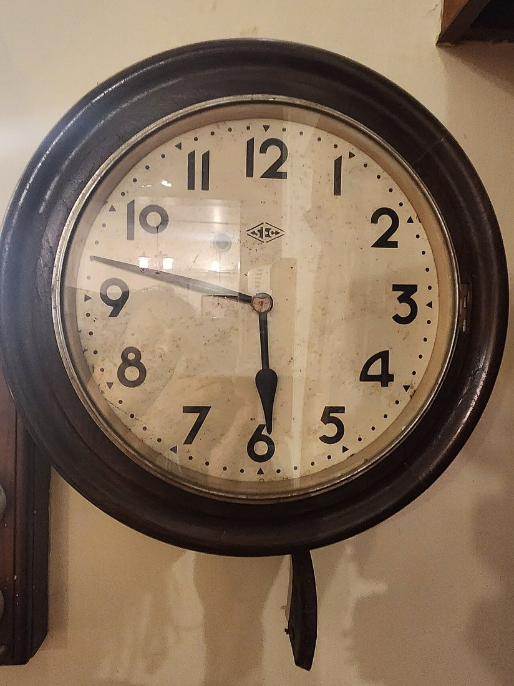
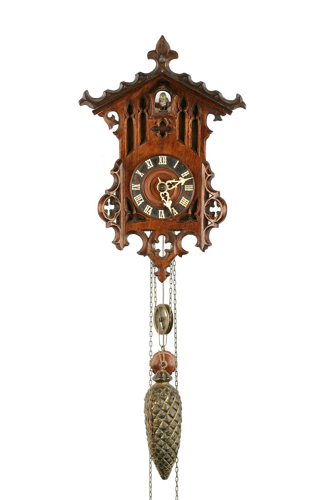

Көркем еңбек (ұлдар) · 5-бөлім · Дизайн және қолөнер Art & Craft (Boys) · Section 5 · Design & Crafts Художественный труд (мальчики) · Раздел 5 · Дизайн и ремёсла
Интерьерге арналған сәндік бұйымдар (шам, сағат)
Decorative Items for the Interior (Lamp, Clock)
Декоративные изделия для интерьера (светильник, часы)
Қолмен жасалған шам мен сағат: пайда мен сұлулықты біріктіретін бұйымдар. Hand-made lamps and clocks: objects that unite usefulness and beauty. Светильник и часы своими руками: вещи, где польза встречается с красотой.
Сәндік бұйым деген не? What is a decorative item? Что такое декоративное изделие?
Сәндік-қолданбалы бұйым — бір мезгілде қызмет атқаратын және интерьерді әсемдейтін зат. Үстел шамы бөлмеге жарық береді, ал сағат уақытты көрсетеді — бірақ екеуі де пішіні, материалы мен әрленуі арқылы үй ішінің көркем бейнесін жасайды. Шебер мұндай бұйымды жобалағанда үш нәрсені бірге ойлайды: функция (зат не істейді), құрастыру (бөлшектер қалай біріктіріледі) және көркемдік (пропорция, түс, фактура).
A decorative-applied item is an object that is useful and at the same time beautifies the interior. A table lamp lights the room, a clock shows the time — yet both shape the artistic look of the home through their form, material and finish. When a craftsman designs such an item he thinks about three things together: function (what it does), construction (how the parts join) and aesthetics (proportion, colour, texture).
Декоративно-прикладное изделие — это предмет, который приносит пользу и одновременно украшает интерьер. Настольный светильник даёт свет, часы показывают время — но оба формируют художественный облик дома через форму, материал и отделку. Проектируя такую вещь, мастер думает сразу о трёх вещах: функция (что предмет делает), конструкция (как соединяются детали) и эстетика (пропорции, цвет, фактура).
Функция Function Функция
Бұйым нақты міндет атқаруы тиіс: жарық беру немесе уақытты дәл көрсету. The item must do a real job: give light, or tell the time accurately. Изделие должно решать реальную задачу: давать свет или точно показывать время.
Құрастыру Construction Конструкция
Бөлшектер берік әрі қауіпсіз жалғануы, ал электр бөлігі оқшауланған болуы керек. Parts must join firmly and safely, and the electrical part must be insulated. Детали должны соединяться прочно и безопасно, а электрическая часть — быть изолированной.
Көркемдік Aesthetics Эстетика
Пропорция, түс үйлесімі мен материал фактурасы көзге жағымды болуы тиіс. Proportion, colour harmony and material texture should please the eye. Пропорции, сочетание цветов и фактура материала должны радовать глаз.
Шам мен сағат: салыстыру Lamp and clock: a comparison Светильник и часы: сравнение
| Признак | Светильник | Настенные / настольные часы |
|---|---|---|
| Главная функция | Освещение и создание настроения | Измерение и показ времени |
| Основные части | Основание, стойка, патрон, лампа, абажур | Корпус, циферблат, стрелки, механизм |
| Материалы | Дерево, металл, стекло, ткань | Дерево, фанера, металл, стекло |
| Опасный узел | Электропроводка 220 В — нужна изоляция | Батарейка / завод пружины — безопаснее |
| Художественный приём | Игра света сквозь абажур | Резьба, форма корпуса, оформление циферблата |
| Белгісі | Шам | Қабырға / үстел сағаты |
|---|---|---|
| Басты қызметі | Жарықтандыру және көңіл-күй жасау | Уақытты өлшеу және көрсету |
| Негізгі бөлшектері | Табан, тірек, патрон, шам, абажур | Корпус, циферблат, тілдер, механизм |
| Материалдары | Ағаш, металл, шыны, мата | Ағаш, фанера, металл, шыны |
| Қауіпті түйін | 220 В электр сымы — оқшаулау қажет | Батарея / серіппе — қауіпсіздеу |
| Көркем тәсіл | Абажур арқылы жарық ойыны | Оюлау, корпус пішіні, циферблат әрлеуі |
| Feature | Lamp | Wall / table clock |
|---|---|---|
| Main function | Lighting and setting a mood | Measuring and showing time |
| Main parts | Base, stem, socket, bulb, shade | Case, dial, hands, movement |
| Materials | Wood, metal, glass, fabric | Wood, plywood, metal, glass |
| Risky unit | 220 V wiring — needs insulation | Battery / spring drive — safer |
| Artistic device | Play of light through the shade | Carving, case shape, dial design |
Үстел шамының құрылысы мен жинау реті Structure and assembly order of a table lamp Устройство и порядок сборки настольного светильника

Жинақтаудың принципті сұлбасы (бөлшектер бөлек көрсетілген) Schematic exploded view of the assembly Принципиальная схема сборки (детали разнесены)
Табан. Тұрақты ауыр негіз дайындаймыз (ағаш дөңгелек). Ортасынан сым өтетін тесік бұрғылаймыз. Base. Make a stable, heavy base (a round wooden block). Drill a hole through the centre for the cable. Основание. Готовим устойчивое тяжёлое основание (деревянный кругляш). Сверлим в центре отверстие для провода.
Тірек. Бұрандалы шыбықты (трубканы) табанға бекітеміз — ол шамның биіктігін береді. Stem. Fix the threaded rod (tube) into the base — it sets the height of the lamp. Стойка. Закрепляем в основании резьбовую шпильку (трубку) — она задаёт высоту светильника.
Патрон. Сымды тіреш арқылы өткізіп, патронды жалғаймыз. Барлық қосылыс оқшауланған болуы шарт. Socket. Run the cable up the stem and connect the socket. Every joint must be insulated. Патрон. Пропускаем провод через стойку и подключаем патрон. Все соединения обязательно изолируем.
Шам мен абажур. Шамды бұрап орнатамыз, үстіне абажур киеміз. Тексеру алдында розеткадан ажыратамыз. Bulb & shade. Screw in the bulb and fit the shade on top. Unplug before any checking. Лампа и абажур. Вкручиваем лампу и надеваем абажур. Перед проверкой отключаем от розетки.
⚠️ Қауіпсіздік: электр бөлігін тек желіден ажыратылған кезде құрастыр; сымның оқшаулауын тексер. ⚠️ Safety: assemble the electrical part only when unplugged; check the cable insulation. ⚠️ Безопасность: электрическую часть собирай только обесточенной; проверяй изоляцию провода.
Сәндік бұйымдар галереясы Gallery of decorative items Галерея декоративных изделий
Үлкейту үшін суретті басыңыз. Click an image to enlarge. Нажмите на изображение, чтобы увеличить.




Жобалаудың алтын ережелері Golden rules of design Золотые правила проектирования
Бөліктер бір-бірімен үйлесуі тиіс: ауыр абажур жіңішке тірекке қисық көрінеді. Эскизде өлшемдерді алдын ала есепте. Parts must agree with each other: a heavy shade on a thin stem looks wrong. Plan the sizes on the sketch first. Части должны согласовываться: тяжёлый абажур на тонкой стойке смотрится неустойчиво. Рассчитай размеры на эскизе заранее.
Материал қызметке сай болуы керек: шам жанындағы бөлік қызуға төзімді болсын, ал табан ауыр әрі тұрақты болсын. The material must suit the job: parts near the bulb should resist heat, and the base should be heavy and stable. Материал должен подходить задаче: детали возле лампы — термостойкими, а основание — тяжёлым и устойчивым.
Абажурдың түсі мен қалыңдығы жарықтың түсін өзгертеді. Жылы рең — жайлылық, суық рең — жұмыс көңіл-күйін береді. The colour and thickness of the shade change the colour of the light. Warm tones give cosiness, cool tones a working mood. Цвет и толщина абажура меняют оттенок света. Тёплые тона дают уют, холодные — рабочее настроение.
Электр бөлігі — ересектің бақылауымен. Сым бекем оқшаулансын, ал ыстық лампа жанғыш материалға тимесін. The electrical part is done under an adult's supervision. Insulate the cable firmly, and keep a hot bulb away from flammable material. Электрическую часть выполняй под присмотром взрослого. Надёжно изолируй провод, а горячую лампу держи вдали от горючего.
Қорытынды In conclusion Вывод
Шам мен сағат — қарапайым тұрмыс заттары емес, шебердің ой-қиялы мен қолөнерінің жемісі. Жақсы жобаланған сәндік бұйым пайдалы болумен қатар, үйге жылылық пен жеке мінез сыйлайды. A lamp and a clock are not just everyday objects but the fruit of the maker's imagination and craft. A well-designed decorative item is useful and, at the same time, gives the home warmth and a character of its own. Светильник и часы — не просто бытовые вещи, а плод воображения и мастерства автора. Хорошо спроектированное декоративное изделие приносит пользу и одновременно дарит дому тепло и собственный характер.